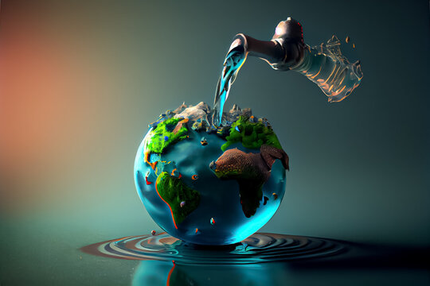
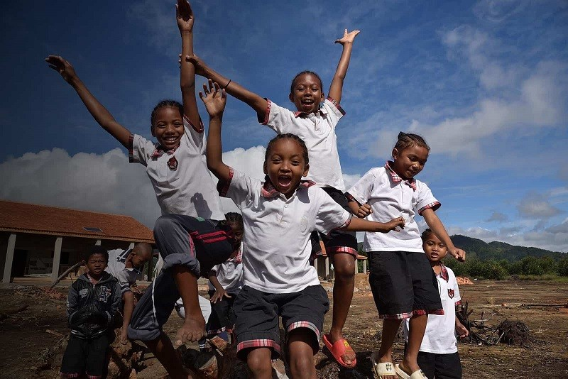
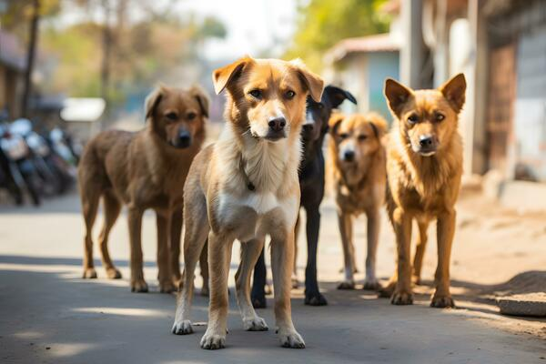
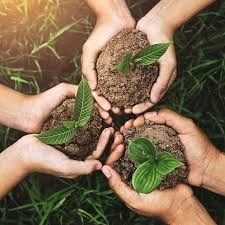

Project Sewa
Delivers food and clothing directly to underprivileged individuals and families who lack reliable access to basic necessities.
InAmigos Foundation is a Chhattisgarh-based nonprofit turning everyday compassion into food on empty plates, classrooms for underprivileged children, care for animals, and new skills for women and youth across India.
InAmigos Foundation was founded on 23 September 2020 by Mr. Govind Shukla, Founder ; CEO. It is a Section 8 non-profit organisation licensed by the Central Government, headquartered in Bilaspur, Chhattisgarh, and active across the country through a network of volunteers and corporate partners.
The foundation is guided by a simple belief: unity, compassion and collective action can uplift the less fortunate and drive lasting social change. That belief plays out through six focused initiatives spanning food security, education, animal welfare, women's empowerment, environmental sustainability and employability.
Each project carries a Hindi name that reflects what it stands for — service, childhood, life, flight, nature and growth. Together they cover the essentials people need to live with dignity.

Delivers food and clothing directly to underprivileged individuals and families who lack reliable access to basic necessities.

Closes educational gaps for underprivileged children through school support, basic digital literacy and life-skills training.

Focuses on animal welfare through rescue, protection and regular feeding drives for animals in need of care.
Supports women's empowerment through skill-development training aimed at building financial independence.

"Plant for a better tomorrow" — works on environmental conservation and sustainability through tree planting and awareness efforts.
Offers skill-development programmes that improve employability, particularly for underprivileged youth.
Every InAmigos project targets a specific, everyday gap — in food, education, safety, opportunity or a clean environment — and works to close it directly rather than in the abstract. That focus is what turns donations and volunteer hours into outcomes people can feel.
The foundation's CSR-1 registration also lets it channel corporate Corporate Social Responsibility funding straight into these six causes, widening the circle of people who can contribute meaningfully.
Underprivileged families, children, women and animals across the states InAmigos operates in, supported by a network of volunteers and partners.
Access — to a meal, a classroom, a skill, or safety — for people and animals who would otherwise have to go without.
Volunteer your time, donate directly, spread the word on social media, or bring your organisation in as a CSR partner.
There's a way to contribute whatever time, skill or resource you have to give.
Join the on-ground network that runs Sewa, Bachpanshala and every other project.
Become a volunteer →Contribute funds that go directly toward food, education and welfare drives.
Donate now →Follow and share InAmigos' work with your circle to widen its reach.
Follow on Instagram →Bring your organisation in as a CSR-1 registered partner for a focused cause.
Get in touch →Every meal served, child taught, animal fed and skill shared started with one person deciding to show up. Yours could be next.